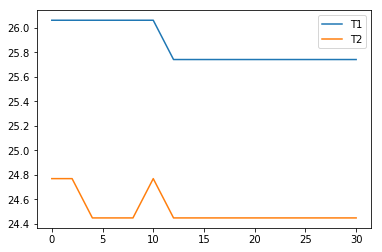
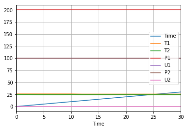
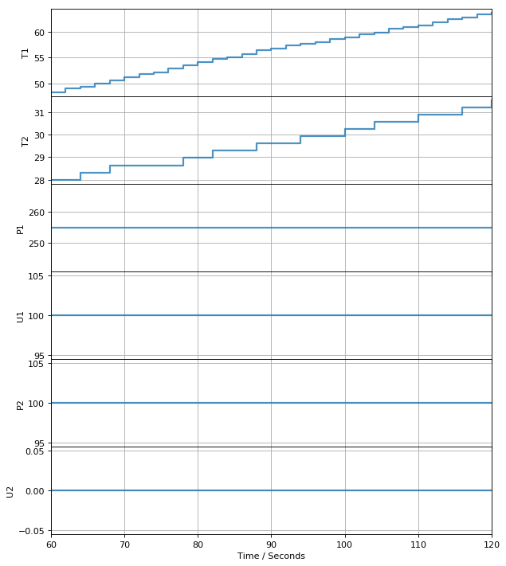
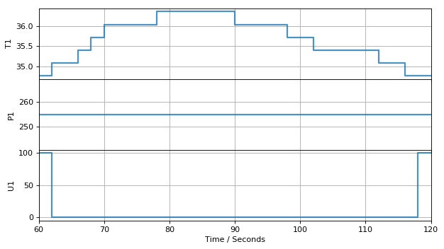

Operation of the Temperature Control Laboratory#
The primary purpose of this notebook is to test and verify correct operation of the Temperature Control Laboratory. Before starting, be sure the latest version of TCLab firmware has been installed on the Arduino, and the lastest version of the tclab has been installed on your laptop. The library can be installed by copying and runing the following command into a new code cell:
!pip install tclab
And prerequisite libraries, such as pyserial will be installed at the same time. To upgrade a previous installation, use
!pip install tclab --upgrade
!pip install tclab --upgrade
Requirement already up-to-date: tclab in /Users/jeff/opt/anaconda3/lib/python3.7/site-packages (0.4.9)
Requirement already satisfied, skipping upgrade: pyserial in /Users/jeff/opt/anaconda3/lib/python3.7/site-packages (from tclab) (3.4)
Establishing connection with tclab.TCLab#
The interface to the Temperature Control Laboratory is established by creating an instance of a TCLab object from the tclab library. When all operations are complete, the instance should be closed. The following cell opens a serial connection to the TCLab hardware over USB, turns on the LED at 100% power, and then closes the connection. The output of this cell will report:
version number of the tclab Python library
device port and speed of the serial connection
version number of the TCLab firmware
The LED will return to normal operation after 10 seconds.
from tclab import TCLab
lab = TCLab()
lab.LED(100)
lab.close()
TCLab version 0.4.9
Arduino Leonardo connected on port /dev/cu.usbmodem142101 at 115200 baud.
TCLab Firmware 1.5.1 Arduino Leonardo/Micro.
TCLab disconnected successfully.
The Python with statement provides a more convenient syntax for coding with the Temperature Control Laboratory. The with statement creates an instance of TCLab and assigns the name given after as. Once the code block is complete, the TCLab.close() command is executed automatically. Generally speaking, this is the preferred syntax for coding with TCLab.
from tclab import TCLab
with TCLab() as lab:
lab.LED(100)
TCLab version 0.4.9
Arduino Leonardo connected on port /dev/cu.usbmodem142101 at 115200 baud.
TCLab Firmware 1.5.1 Arduino Leonardo/Micro.
TCLab disconnected successfully.
The following code uses the TCLab.LED() command to cause the LED to blink on and off at 100% brightness once a second for five seconds. The standard Python library function time.sleep() is used to pause execution.
from tclab import TCLab
import time
with TCLab() as lab:
for k in range(0, 5): # repeat 5 times
lab.LED(100) # LED set to 100%
time.sleep(0.5) # sleep for 0.5 seconds
lab.LED(0) # LED set to 0%
time.sleep(0.5) # sleep for 0.5 seconds
TCLab version 0.4.9
Arduino Leonardo connected on port /dev/cu.usbmodem142101 at 115200 baud.
TCLab Firmware 1.5.1 Arduino Leonardo/Micro.
TCLab disconnected successfully.
Reading the temperature sensors#
The temperatures measured by the thermisters located on the TCLab are accessed as if they were Python variables TCLab.T1 and TCLab.T2. The following cell accesses and prints the current temperatures of the two thermisters.
from tclab import TCLab
with TCLab() as lab:
print("Temperature 1: {0:0.2f} C".format(lab.T1))
print("Temperature 2: {0:0.2f} C".format(lab.T2))
TCLab version 0.4.9
Arduino Leonardo connected on port /dev/cu.usbmodem142101 at 115200 baud.
TCLab Firmware 1.5.1 Arduino Leonardo/Micro.
Temperature 1: 24.77 C
Temperature 2: 24.77 C
TCLab disconnected successfully.
Setting Heater Power#
Power for the heaters on the Temperature Control Lab is provided through a USB power cord and a USB power supply. Too achieve the maximum operating envelope the power supply should be capable of 2 amps or 10 watts.
The power to each heater is the specified as the product of a specified maximum power multiplied by the percentaage of that power to use. For heater 1, the maximum power is specified by the variable TCLab.P1 and the percentage of power to use by TCLab.U1. A similar rule holds for heater 2.
The applied power, in watts, for heaters 1 and 2 are given by
lab = TCLab()
power_in_watts_heater_1 = 0.013 * lab.P1 * lab.U1 / 100
power_in_watts_heater_2 = 0.013 * lab.P2 * lab.U2 / 100
where the value 0.013 is a conversion from values used in the coding to actual power in measured in watts.
Setting maximum power levels tclab.TCLab.P1 and tclab.TCLab.P2#
The maximum power available from each heater is adjusted assigning values in the range from 0 to 255 to variables TCLab.P1 and TCLab.P2. Default values of 200 and 100, respectively, are assigned upon the start of a new connection.
To convert TCLab.P1 and TCLab.P2 values to watts, multiply by a conversion factor of 0.013 watts/unit.
from tclab import TCLab
with TCLab() as lab:
print("Startup conditions")
print("Maximum power of heater 1:", lab.P1, "=", lab.P1*0.013, "watts")
print("Maximum power of heater 1:", lab.P2, "=", lab.P2*0.013, "watts")
print()
print("Set maximum power to 255")
lab.P1 = 255
lab.P2 = 255
print("Maximum power of heater 1:", lab.P1, "=", lab.P1*0.013, "watts")
print("Maximum power of heater 1:", lab.P2, "=", lab.P2*0.013, "watts")
TCLab version 0.4.9
Arduino Leonardo connected on port /dev/cu.usbmodem142101 at 115200 baud.
TCLab Firmware 1.5.1 Arduino Leonardo/Micro.
Startup conditions
Maximum power of heater 1: 200.0 = 2.6 watts
Maximum power of heater 1: 100.0 = 1.3 watts
Set maximum power to 255
Maximum power of heater 1: 255.0 = 3.315 watts
Maximum power of heater 1: 255.0 = 3.315 watts
TCLab disconnected successfully.
Setting heater power levels tclab.TCLab.U1 and tclab.TCLab.U2#
The power to each heater can be accessed or set with variables TCLab.U1 and TCLab.U2 with values ranging from 0 to 100.
from tclab import TCLab
import time
with TCLab() as lab:
print()
print("Starting Temperature 1: {0:0.2f} C".format(lab.T1), flush=True)
print("Starting Temperature 2: {0:0.2f} C".format(lab.T2), flush=True)
print()
print("Maximum power of heater 1:", lab.P1, "=", 0.013*lab.P1, "watts")
print("Maximum power of heater 2:", lab.P2, "=", 0.013*lab.P2, "watts")
print()
print("Set Heater 1:", lab.Q1(100), "%", flush=True)
print("Set Heater 2:", lab.Q2(100), "%", flush=True)
t_heat = 60
print()
print("Heat for", t_heat, "seconds")
time.sleep(t_heat)
print()
print("Set Heater 1:", lab.Q1(0), "%",flush=True)
print("Set Heater 2:", lab.Q2(0), "%",flush=True)
print()
print("Final Temperature 1: {0:0.2f} C".format(lab.T1))
print("Final Temperature 2: {0:0.2f} C".format(lab.T2))
print()
TCLab version 0.4.9
Arduino Leonardo connected on port /dev/cu.usbmodem142101 at 115200 baud.
TCLab Firmware 1.5.1 Arduino Leonardo/Micro.
Starting Temperature 1: 49.59 C
Starting Temperature 2: 39.60 C
Maximum power of heater 1: 200.0 = 2.6 watts
Maximum power of heater 2: 100.0 = 1.3 watts
Set Heater 1: 100.0 %
Set Heater 2: 100.0 %
Heat for 60 seconds
Set Heater 1: 0.0 %
Set Heater 2: 0.0 %
Final Temperature 1: 54.75 C
Final Temperature 2: 43.47 C
TCLab disconnected successfully.
Setting heater power levels TCLab.Q1() and TCLab.Q2()#
Earlier versions of the Temperature Control Lab used functions TCLab.Q1() and TCLab.Q2() to set the percentage of maximum power applied to heaters 1 and 2, respectively. These are functionally equivalent to assigning values to TCLab.P1 and TCLab.P2.
Synchronizing with real time using tclab.clock(tperiod, tsample)#
Coding for the Temperature Control Laboratory will typically include a code block that must be executed at regular intervals for a period of time. tclab.clock(tperiod, tsample) is a Python iterator designed to simplify coding for those applications, where tperiod is the period of operation and tsample is the time between executions of the code block.
The following code will print “Hello, World” every two seconds for sixty seconds.
from tclab import TCLab, clock
with TCLab() as lab:
for t in clock(60, 2):
pass
The following code cell demonstrates use of tclab.clock() to read a series of temperature measurements.
from tclab import TCLab, clock
tperiod = 60
tsample = 2
# connect to the temperature control lab
with TCLab() as lab:
# turn heaters on
print()
lab.P1 = 200
lab.P2 = 100
lab.U1 = 100
lab.U2 = 100
print("Set Heater 1 to {0:0.1f}% of max power of {1:0.1f} units".format(lab.U1, lab.P1))
print("Set Heater 2 to {0:0.1f}% of max power of {1:0.1f} units".format(lab.U2, lab.P2))
# report temperatures for the next tperiod seconds
print()
for t in clock(tperiod, tsample):
print(" {0:5.1f} sec: T1 = {1:0.1f} C T2 = {2:0.1f} C".format(t, lab.T1, lab.T2), flush=True)
lab.U1 = 0
lab.U2 = 0
TCLab version 0.4.9
Arduino Leonardo connected on port /dev/cu.usbmodem142101 at 115200 baud.
TCLab Firmware 1.5.1 Arduino Leonardo/Micro.
Set Heater 1 to 100.0% of max power of 200.0 units
Set Heater 2 to 100.0% of max power of 100.0 units
0.0 sec: T1 = 29.0 C T2 = 28.6 C
2.0 sec: T1 = 29.0 C T2 = 28.6 C
4.0 sec: T1 = 29.0 C T2 = 28.6 C
6.0 sec: T1 = 29.0 C T2 = 28.6 C
8.0 sec: T1 = 28.6 C T2 = 28.6 C
10.0 sec: T1 = 28.6 C T2 = 28.6 C
12.0 sec: T1 = 28.6 C T2 = 28.6 C
14.0 sec: T1 = 28.6 C T2 = 28.6 C
16.0 sec: T1 = 28.6 C T2 = 28.6 C
18.0 sec: T1 = 28.6 C T2 = 28.3 C
20.0 sec: T1 = 28.6 C T2 = 29.3 C
22.0 sec: T1 = 28.6 C T2 = 28.3 C
24.0 sec: T1 = 28.6 C T2 = 29.3 C
26.0 sec: T1 = 29.0 C T2 = 29.3 C
28.0 sec: T1 = 29.0 C T2 = 28.6 C
30.0 sec: T1 = 29.3 C T2 = 28.6 C
32.0 sec: T1 = 29.6 C T2 = 29.9 C
34.0 sec: T1 = 29.9 C T2 = 29.0 C
36.0 sec: T1 = 30.2 C T2 = 29.3 C
38.0 sec: T1 = 30.9 C T2 = 30.2 C
40.0 sec: T1 = 31.2 C T2 = 29.6 C
42.0 sec: T1 = 31.5 C T2 = 30.9 C
44.0 sec: T1 = 31.9 C T2 = 29.9 C
46.0 sec: T1 = 32.5 C T2 = 31.2 C
48.0 sec: T1 = 32.8 C T2 = 30.6 C
50.0 sec: T1 = 33.5 C T2 = 31.5 C
52.0 sec: T1 = 33.8 C T2 = 30.9 C
54.0 sec: T1 = 34.4 C T2 = 32.2 C
56.0 sec: T1 = 34.8 C T2 = 31.2 C
58.0 sec: T1 = 35.4 C T2 = 32.5 C
60.0 sec: T1 = 35.7 C T2 = 31.9 C
TCLab disconnected successfully.
Data logging with tclab.Historian#
A common requirement in commercial process control systems is to maintain a log of all important process data. tclab.Historian is a simple implementation of data historian for the Temperature Control Laboratory.
An instance of the tclab.Historian from a list of data sources after a connection has been created with tclab.TCLab. The data sources are name/function pairs where the function creates the value to be logged.
from tclab import TCLab, clock, Historian
with TCLab() as lab:
sources = [
('T1', lambda: lab.T1),
('T2', lambda: lab.T2),
('P1', lambda: lab.P1),
('U1', lambda: lab.U1),
('P2', lambda: lab.P2),
('U2', lambda: lab.U2),
]
h = Historian(sources)
lab.U1 = 100
for t in clock(30, 2):
h.update(t)
TCLab version 0.4.9
Arduino Leonardo connected on port /dev/cu.usbmodem142101 at 115200 baud.
TCLab Firmware 1.5.1 Arduino Leonardo/Micro.
TCLab disconnected successfully.
# plotting
import matplotlib.pyplot as plt
t, T1, T2, P1, U1, P2, U2 = h.fields
plt.plot(t, T1, t, T2)
plt.legend(['T1', 'T2'])
# saving to a file
h.to_csv('data.csv')
# reading from file and plotting with pandas
import pandas as pd
data = pd.read_csv('data.csv')
data.index = data['Time']
print(data)
data.plot(grid=True)
Time T1 T2 P1 U1 P2 U2
Time
0.00 0.00 26.06 24.77 200.0 100.0 100.0 0.0
2.00 2.00 26.06 24.77 200.0 100.0 100.0 0.0
4.00 4.00 26.06 24.45 200.0 100.0 100.0 0.0
6.00 6.00 26.06 24.45 200.0 100.0 100.0 0.0
8.00 8.00 26.06 24.45 200.0 100.0 100.0 0.0
10.00 10.00 26.06 24.77 200.0 100.0 100.0 0.0
12.00 12.00 25.74 24.45 200.0 100.0 100.0 0.0
14.01 14.01 25.74 24.45 200.0 100.0 100.0 0.0
16.01 16.01 25.74 24.45 200.0 100.0 100.0 0.0
18.01 18.01 25.74 24.45 200.0 100.0 100.0 0.0
20.00 20.00 25.74 24.45 200.0 100.0 100.0 0.0
22.00 22.00 25.74 24.45 200.0 100.0 100.0 0.0
24.00 24.00 25.74 24.45 200.0 100.0 100.0 0.0
26.00 26.00 25.74 24.45 200.0 100.0 100.0 0.0
28.00 28.00 25.74 24.45 200.0 100.0 100.0 0.0
30.00 30.00 25.74 24.45 200.0 100.0 100.0 0.0
<matplotlib.axes._subplots.AxesSubplot at 0x122d62890>


Real time plotting with tclab.Plotter#
The tclab.Plotter class adds to the functionality of tclab.Historian by providing real-time plotting of experimental data. An instance of a plotter is created after an historian has been created.
h = Historian(sources)
p = Plotter(h, tperiod)
The plotter is updated by
p.update(t)
which also updates the associated historian.
from tclab import TCLab, clock, Historian, Plotter
tperiod = 120
tsample = 2
with TCLab() as lab:
sources = [
('T1', lambda: lab.T1),
('T2', lambda: lab.T2),
('P1', lambda: lab.P1),
('U1', lambda: lab.U1),
('P2', lambda: lab.P2),
('U2', lambda: lab.U2),
]
h = Historian(sources)
p = Plotter(h, 60)
lab.P1 = 255
lab.U1 = 100
for t in clock(tperiod, tsample):
p.update(t)

TCLab disconnected successfully.
Example Application: Relay Control#
from tclab import TCLab, clock, Historian, Plotter
tperiod = 120
tsample = 2
Tsetpoint = 35
with TCLab() as lab:
sources = [
('T1', lambda: lab.T1),
('P1', lambda: lab.P1),
('U1', lambda: lab.U1),
]
h = Historian(sources)
p = Plotter(h, 60)
lab.P1 = 255
for t in clock(tperiod, tsample):
lab.U1 = 100 if lab.T1 < Tsetpoint else 0
p.update(t)

TCLab disconnected successfully.